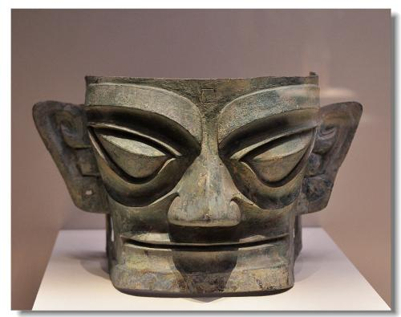
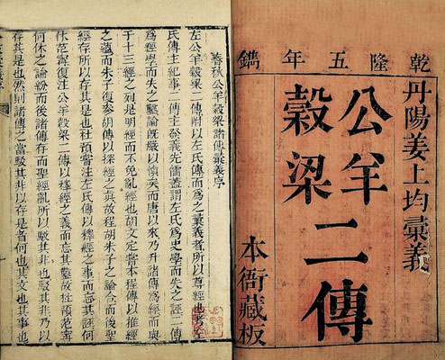
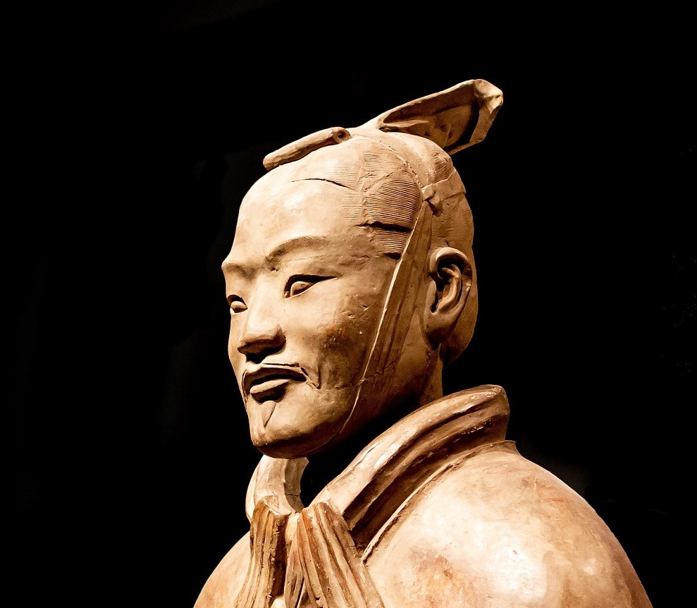
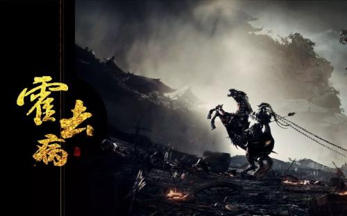
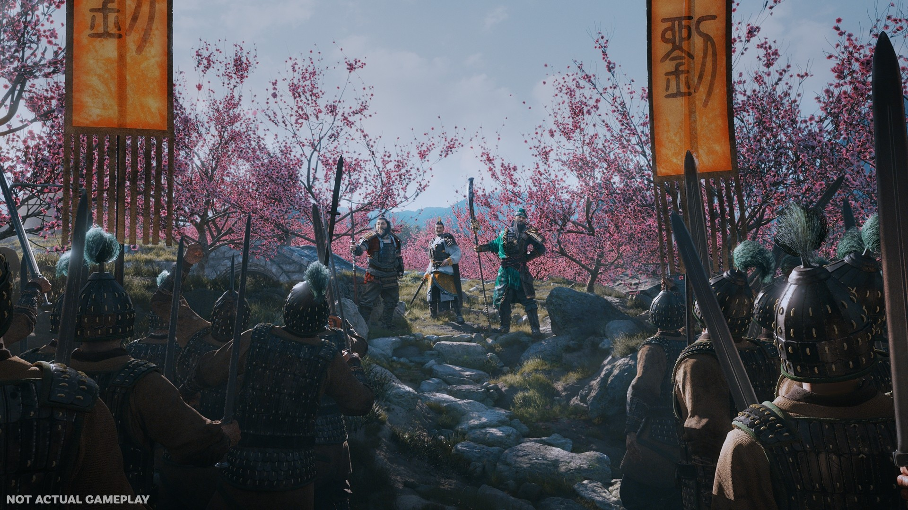
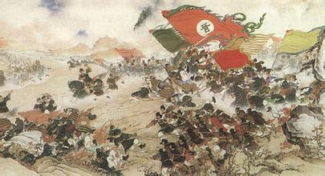
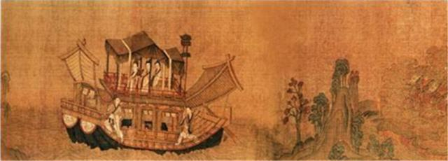
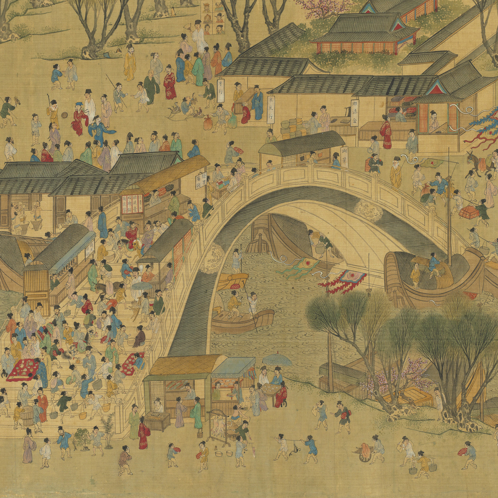
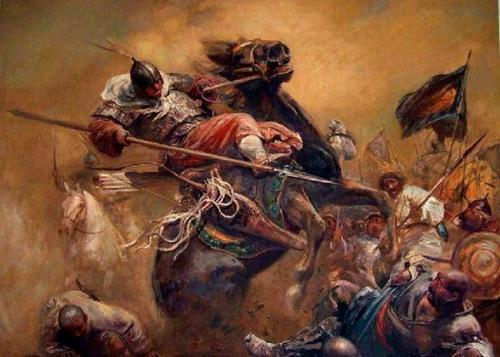
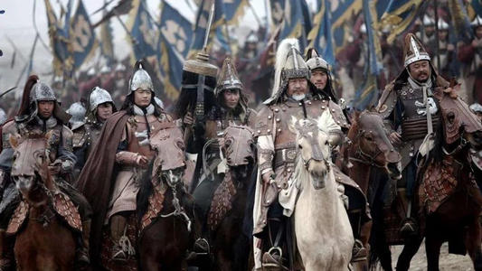

[夏朝]
夏朝（约前2070~前1600 ）是中国史书中记载的第一个世袭制朝代。
[商朝]
商朝（约公元前1600年—约公元前1046年），是中国历史上的第二个朝代，是中国第一个有直接的同时期的文字记载的王朝。

[周朝]
周朝（前1046年—前256年）是中国历史上继商朝之后的第三个王朝。

[春秋]
春秋时代，通常用来指中国东周前半期历史阶段，即自公元前770年至公元前476年这段历史时期，史称“春秋时期”。
[战国]
战国（公元前475年—公元前221年），是中国历史上继春秋时期之后的大变革时期。

[秦]
秦朝（前221—前207）是由战国时期的秦国发展起来的中国历史上第一个大一统王朝。

[汉]
汉朝（公元前202年~公元8年，公元25~220年）是继秦朝之后的大一统王朝，分为西汉、东汉时期，共历29帝，享国四百零七年。

[三国]
三国（220年－280年）是中国汉朝与晋朝之间的一段历史时期，分为曹魏、蜀汉、东吴三个政权。
[西晋]
西晋（266年—316年），是中国历史上三国时期之后的统一王朝，首都洛阳。

[东晋]
东晋（317年－420年），是由西晋皇族司马睿南迁后建立起来的王朝。

[南北朝]
南北朝（420年—589年）是南朝和北朝的统称。南北朝时期是中国历史上的一段大分裂时期，上承东晋十六国下接隋朝。
[隋]
隋朝（581年—619年）是中国历史上承南北朝，下启唐朝的大一统朝代，享国38年。
[唐]
唐朝（618年—907年），是继隋朝之后的大一统中原王朝，共历二十一帝，享国二百八十九年。

[宋]
宋朝（960年—1279年）是中国历史上承五代十国下启元朝的朝代，分北宋和南宋两个阶段，共历十八帝，享国三百一十九年。

[辽]
辽朝（907年—1125年），是中国历史上由契丹族建立的朝代，共传九帝，享国二百一十八年。

[元]
元朝（1271年—1368年），是中国历史上首次由少数民族建立的大一统王朝，统治者为蒙古孛儿只斤氏。
[明]
明朝（1368年―1644年），是中国历史上一个由汉族建立的王朝。

[清]
清朝（1636年-1912年），是中国历史上最后一个封建王朝，共传十二帝，统治者为满洲爱新觉罗氏。